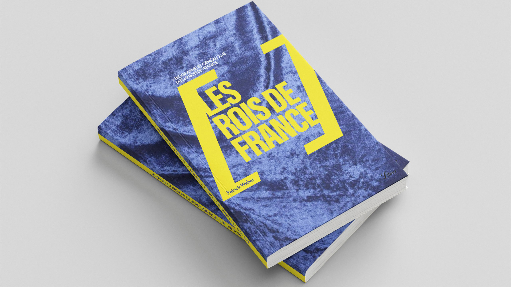
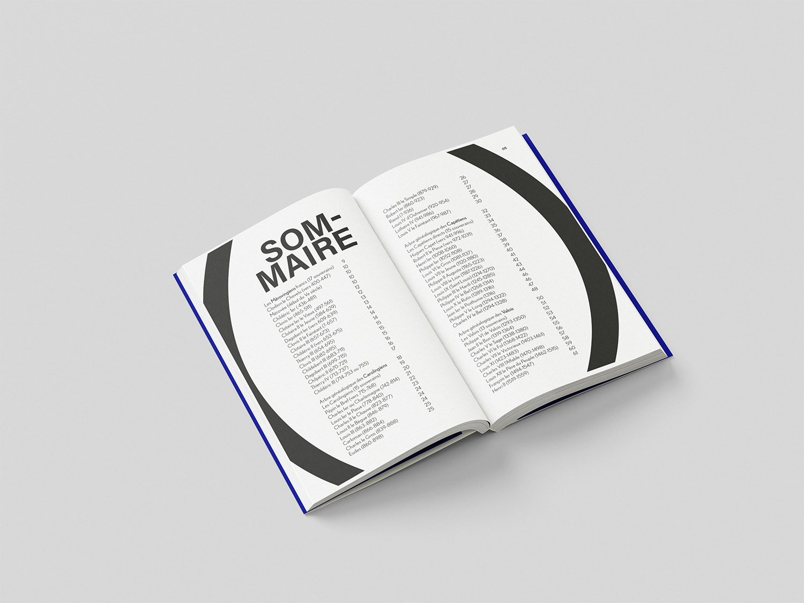
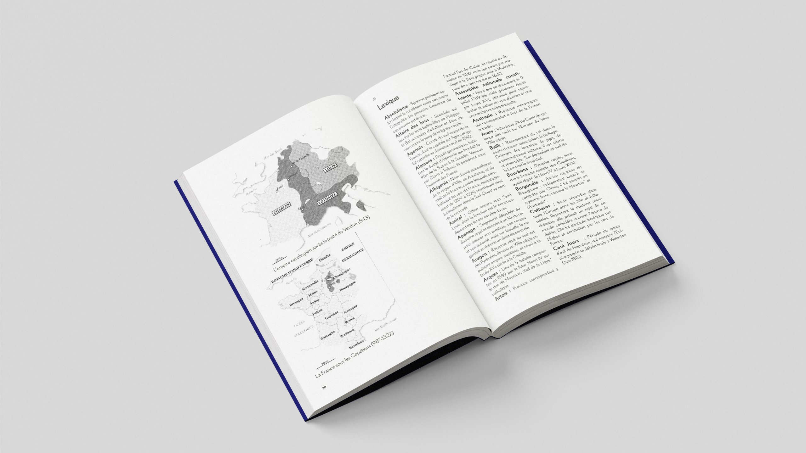
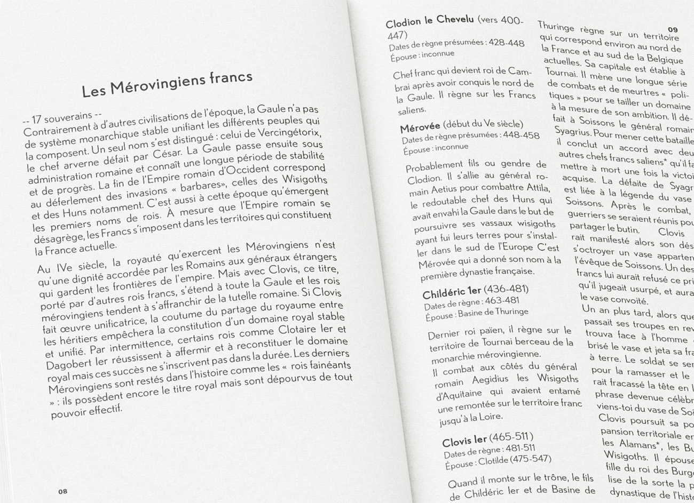

Création d'un principe de collection pour une série de livres clairs et accessibles, avec un design épuré centré sur l’essentiel. Le crochet symbolise la synthèse d’informations, et la couverture en velours bleu renforce l’idée de clarté et d’élégance. L'intérieur est en un seul passage de noir, et l'extérieur en quadrichromie.
   